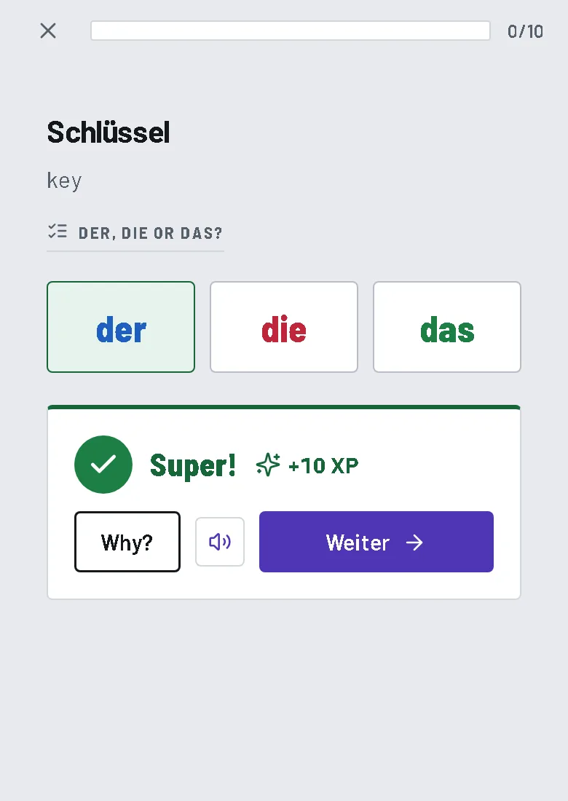
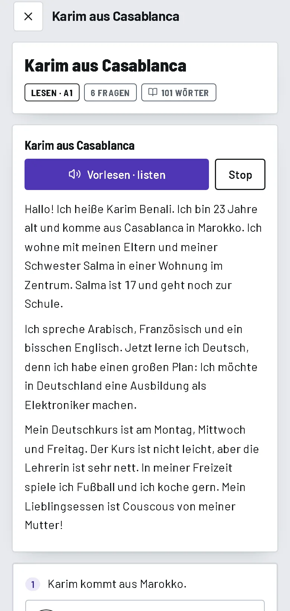
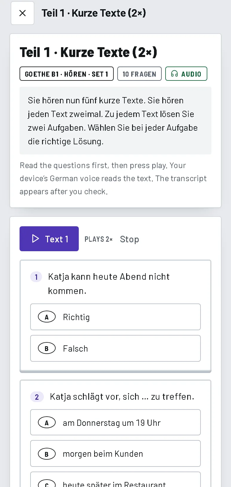
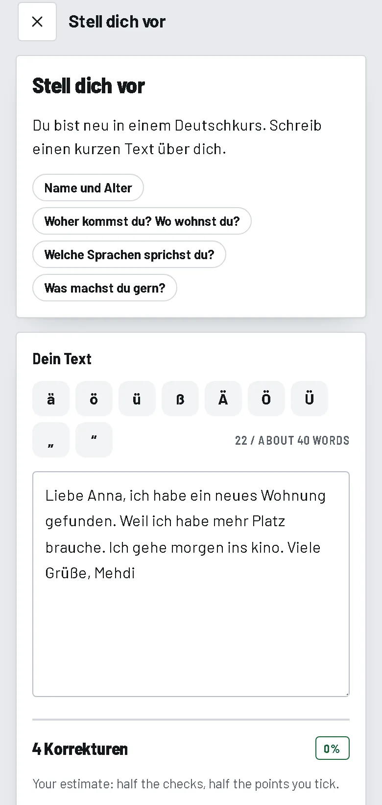
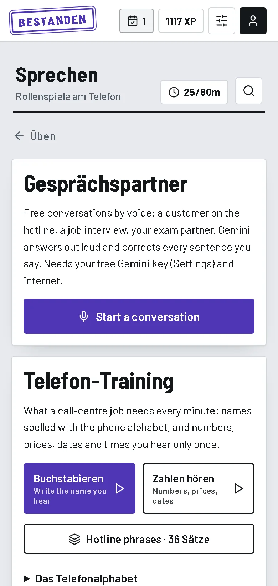
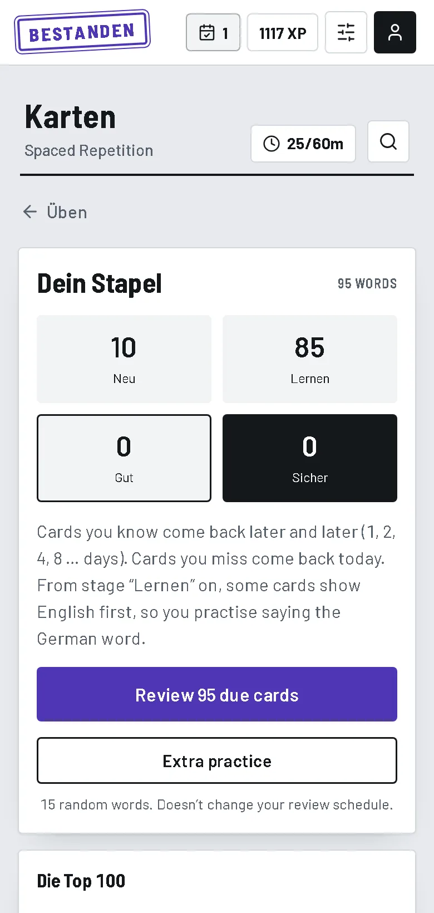
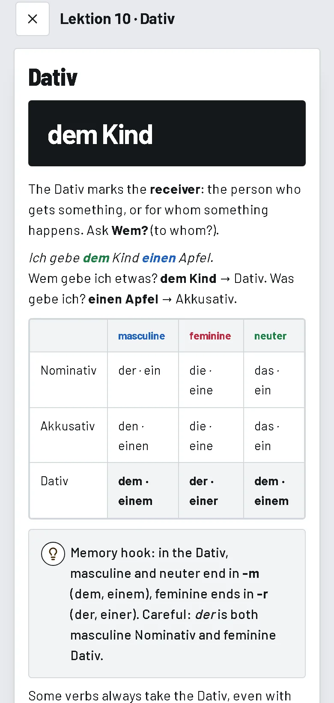
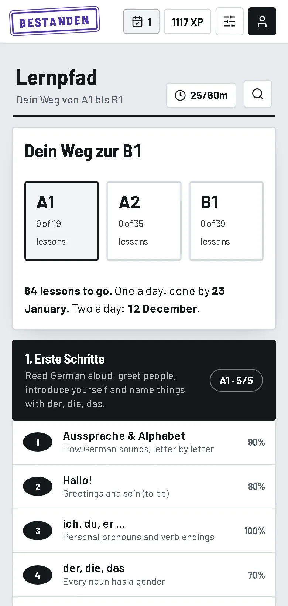
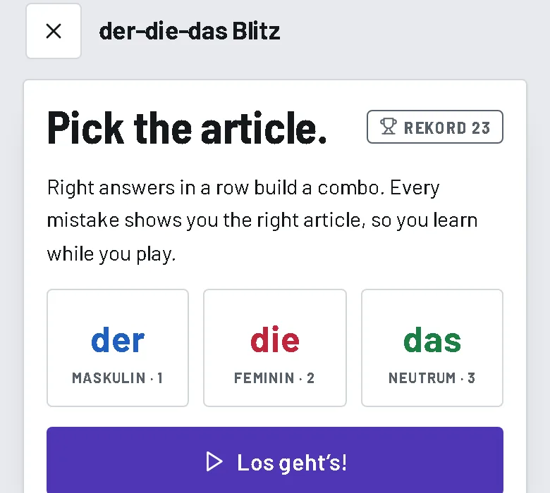

Every day is one sheet.
Choose 30 minutes, one hour or two. The app plans the day for you: flashcards, the next lesson, the pages in your own books, a video, practice. Fill each bubble as you go.
A free daily course from your first word to the Goethe-Zertifikat B1. Lessons, flashcards, reading, writing and practice exams in the real format, planned for you every morning. It works offline on your phone.
No mascots and no gems. Every screen is a sheet you fill in: answer bubbles, form fields, and a violet stamp when you really pass.
Choose 30 minutes, one hour or two. The app plans the day for you: flashcards, the next lesson, the pages in your own books, a video, practice. Fill each bubble as you go.
Every answer is tracked. What you get wrong comes back the next day, then after three and seven days, until you get it right three times.

19 at A1, 35 at A2, 39 at B1, and 3,417 words with their article.
Install it from the browser. Your progress stays on your phone, and a backup file takes two seconds.
Same parts, same question types, same time limits. Practise one Teil at a time or sit a whole module against the clock.

LesenBlogs, newspaper articles, ads and opinions. 27 texts to train on, from Karim’s story to B1. 40 min
HörenAnnouncements, talks and discussions read aloud, some only once, like in the exam. 60 min
Schreiben16 tasks. The app finds typical mistakes; with a free Gemini key every one is explained. 15 min
Sprechen21 role-plays out loud, phone training, and a conversation partner that corrects you.One plan, in the right order. Scroll through an evening with the app.
New words, the Top 100 verbs and nouns, and 1,803 words from the official B1 word list, each with its article, plural or Perfekt.

Examples read aloud, a memory hook, and ten questions. 80% on the first try and the lesson is done.

Add your PDFs once. The plan tells you which pages go with today’s lesson, and the reader opens there.

Fall-Training on your weak spots, der-die-das Blitz, Diktat, spelled names and numbers for call-centre work, and free conversation by voice.

80% or more and it is stamped. Under 60% it says Wiederholen, and those questions come back tomorrow.
Free, no sign-up, no ads. Open it in Chrome on your phone and add it to your home screen.
Open Bestanden